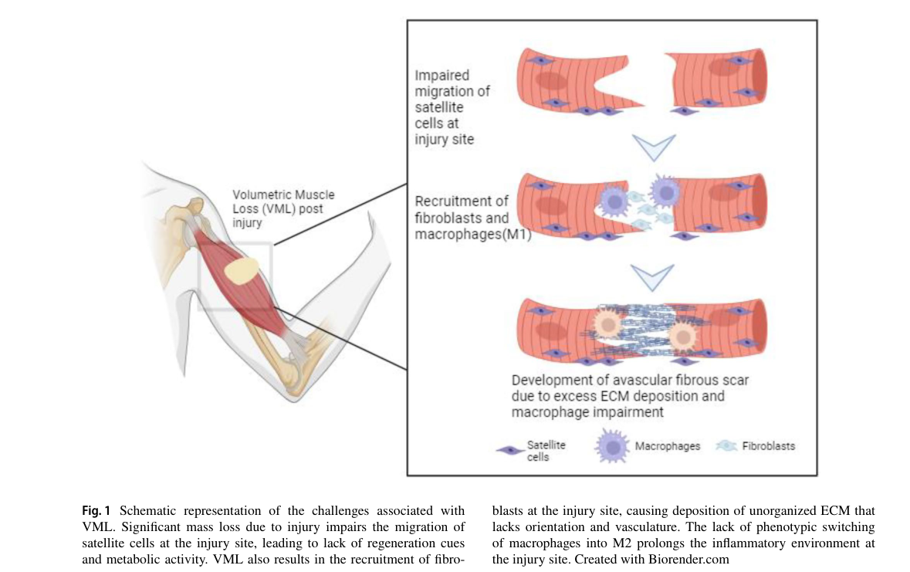

Volumetric muscle loss (VML) is the traumatic or surgical loss of a large volume of skeletal muscle — frank ablation of muscle fibers together with the basal lamina, satellite cells, vasculature, and nerve of the defect — that exceeds the endogenous regenerative capacity of mammalian skeletal muscle. Rather than regenerating functional contractile tissue, the defect heals through an evolutionarily conserved wound-closure program that fills it with non-functional fibrotic scar, producing persistent strength deficits and disability. VML is common in civilian and military extremity trauma and often presents with a residual open wound. This entry models VML as an instance of the conserved fibrotic response specialized to skeletal muscle, and incorporates the spatial fibrosis-versus-myogenesis competition mechanism derived from the Wound Environment Agent-Based Model (WEABM) digital twin.
Ask a research question about Volumetric Muscle Loss. OpenScientist will conduct autonomous deep research using the Disorder Mechanisms Knowledge Base and PubMed literature (typically 10-30 minutes).
Do not include personal health information in your question. Questions and results are cached in your browser's local storage.
name: Volumetric Muscle Loss
creation_date: "2026-06-12T00:00:00Z"
category: Traumatic Injury
parents:
- Musculoskeletal Disease
description: >-
Volumetric muscle loss (VML) is the traumatic or surgical loss of a large
volume of skeletal muscle — frank ablation of muscle fibers together with the
basal lamina, satellite cells, vasculature, and nerve of the defect — that
exceeds the endogenous regenerative capacity of mammalian skeletal muscle.
Rather than regenerating functional contractile tissue, the defect heals
through an evolutionarily conserved wound-closure program that fills it with
non-functional fibrotic scar, producing persistent strength deficits and
disability. VML is common in civilian and military extremity trauma and often
presents with a residual open wound. This entry models VML as an instance of
the conserved fibrotic response specialized to skeletal muscle, and
incorporates the spatial fibrosis-versus-myogenesis competition mechanism
derived from the Wound Environment Agent-Based Model (WEABM) digital twin.
synonyms:
- VML
- volumetric muscle loss injury
notes: >-
No MONDO/OMIM disease term currently maps cleanly to volumetric muscle loss as
an acquired traumatic entity, so disease_term is intentionally omitted (see the
curation-gap discussion). VML conforms to the fibrotic_response module:
pathophysiology nodes substitute skeletal-muscle-specific cell types
(satellite cell, myoblast, skeletal muscle fiber) for the generic module
cell types while preserving the conserved injury -> inflammation ->
mesenchymal/myofibroblast activation -> excessive ECM -> organ dysfunction
causal chain. The disease-specific addition is the spatial competition between
fibrosis and myogenesis for the limited exposed edges of intact myofibrils
required to nucleate myoblast fusion.
mechanistic_hypotheses:
- hypothesis_group_id: canonical_evolutionary_fibrotic_closure
hypothesis_label: Canonical Evolutionarily-Conserved Fibrotic Wound-Closure Dominance
status: CANONICAL
description: >-
The frank loss of muscle tissue in VML exceeds the regenerative capacity of
skeletal muscle, so the defect is resolved by the evolutionarily conserved
wound-healing imperative to rapidly close the wound. Inflammation and
myofibroblast-driven collagen deposition fill the defect with fibrotic scar
at the expense of de novo myofiber regeneration, yielding persistent
functional deficits.
evidence:
- reference: PMID:27825160
supports: SUPPORT
evidence_source: OTHER
snippet: >-
The frank loss of muscle tissue that defines VML injuries is beyond the
robust reparative and regenerative capacities of mammalian skeletal muscle.
explanation: >-
Establishes that VML exceeds endogenous regenerative capacity, the premise
of the canonical fibrotic-closure model. Source is OTHER because this is a
review synthesizing clinical and preclinical studies.
- reference: PMID:29030619
supports: SUPPORT
evidence_source: MODEL_ORGANISM
snippet: >-
VML injury incites an overwhelming inflammatory and fibrotic response that
leads to expansive fibrous tissue deposition and chronic functional
deficits, which ECM repair does not augment.
explanation: >-
A porcine VML model demonstrates the dominant, treatment-resistant fibrotic
response that defines the canonical mechanism.
- hypothesis_group_id: fibrosis_myogenesis_spatial_competition
hypothesis_label: Fibrosis-Myogenesis Spatial Competition for Myofibril-Edge Attachment Sites
status: EMERGING
description: >-
A computationally derived mechanism (WEABM digital twin): fibrosis and
myogenesis compete for a shared, spatially limited resource — the exposed
edges of intact myofibrils where myoblasts must attach to nucleate fusion and
differentiation. Collagen deposition that caps these myofibril ends precludes
myoblast fusion, so the faster fibrotic program preempts regeneration. This
reframes VML repair as a spatial control problem and predicts that promoting
myogenesis alone is insufficient without simultaneously restraining fibrosis
and closing the wound. Independent spatial-transcriptomics evidence (mouse
and canine) supports the spatial premise: a pro-fibrotic program organized in
space restricts muscle stem cell-mediated repair, and disrupting it increases
regeneration while reducing fibrosis.
evidence:
- reference: DOI:10.1101/2024.06.04.595972
supports: SUPPORT
evidence_source: COMPUTATIONAL
snippet: >-
a competition between fibrosis and myogenesis due to spatial constraints on
available edges of intact myofibrils to initiate the myoblast
differentiation process
explanation: >-
The WEABM agent-based model identifies the spatial fibrosis-myogenesis
competition as a fundamental emergent property of VML healing. Source is
COMPUTATIONAL because the insight derives from in silico simulation.
- reference: DOI:10.1101/2022.06.03.494707
supports: SUPPORT
evidence_source: MODEL_ORGANISM
snippet: >-
This program was observed to restrict muscle stem cell mediated repair and
targeting this circuit in a murine model resulted in increased regeneration
and reductions in inflammation and fibrosis.
explanation: >-
Spatial transcriptomics in mouse and canine VML provides independent in
vivo evidence that the spatially organized pro-fibrotic program restricts
stem-cell-mediated myogenesis, corroborating the WEABM competition
hypothesis from experimental data.
pathophysiology:
- name: Frank Muscle Loss and Destruction of the Regenerative Niche
description: >-
Traumatic or surgical ablation removes a large volume of skeletal muscle
including the myofibers, basal lamina, and resident satellite cells of the
defect, together with its vascular and neural supply. Because adult mammalian
muscle cannot perform de novo myofiber regeneration across such a defect, the
loss of the satellite-cell/basal-lamina niche initiates a dysregulated
wound-healing program rather than restoration of contractile tissue. The
residual open wound exposes the defect to the environment.
conforms_to: "fibrotic_response#Tissue Injury"
role: trigger
cell_types:
- preferred_term: skeletal muscle satellite cell
term:
id: CL:0000594
label: skeletal muscle satellite cell
- preferred_term: skeletal muscle fiber
term:
id: CL:0008002
label: skeletal muscle fiber
locations:
- preferred_term: skeletal muscle tissue
term:
id: UBERON:0001134
label: skeletal muscle tissue
biological_processes:
- preferred_term: wound healing
term:
id: GO:0042060
label: wound healing
modifier: DYSREGULATED
- preferred_term: skeletal muscle tissue regeneration
term:
id: GO:0043403
label: skeletal muscle tissue regeneration
modifier: DECREASED
evidence:
- reference: PMID:27825160
supports: SUPPORT
evidence_source: OTHER
snippet: >-
The frank loss of muscle tissue that defines VML injuries is beyond the
robust reparative and regenerative capacities of mammalian skeletal muscle.
explanation: >-
Defines the initiating frank tissue loss that exceeds regenerative
capacity. Source is OTHER because this is a clinical/preclinical review.
- reference: PMID:29030619
supports: SUPPORT
evidence_source: MODEL_ORGANISM
snippet: >-
VML injury presents a defect region in which all native elements required
for canonical skeletal muscle regeneration (e.g., basal lamina and
satellite cells) are removed
explanation: >-
Documents removal of the satellite-cell/basal-lamina regenerative niche
that disables canonical regeneration in a porcine VML study.
downstream:
- target: Persistent Open-Wound Inflammatory Stimulus
causal_link_type: DIRECT
- target: Skeletal muscle atrophy
description: >-
Frank loss of contractile tissue and destruction of the satellite-cell
regenerative niche reduce muscle mass at and around the defect.
causal_link_type: DIRECT
- name: Persistent Open-Wound Inflammatory Stimulus
description: >-
The open VML wound, exposed to the atmospheric/environmental interface, acts
as an ongoing source of damage-associated molecular patterns that recruit
early neutrophils and activate macrophages, sustaining a chronic
inflammatory response. This persistent inflammatory stimulus biases the
wound toward the pro-fibrotic repair program: macrophage-to-mesenchymal
progenitor crosstalk shifts toward TGF-beta in fibrotic conditions and
toward PDGF in regenerative conditions, so the polarization of this crosstalk
helps set the fibrotic-versus-regenerative outcome. The WEABM digital twin
identifies biologically "closing" the wound as necessary to remove this
self-renewing inflammatory drive.
conforms_to: "fibrotic_response#Inflammatory Recruitment and Amplification"
role: amplifier
cell_types:
- preferred_term: macrophage
term:
id: CL:0000235
label: macrophage
- preferred_term: neutrophil
term:
id: CL:0000775
label: neutrophil
locations:
- preferred_term: skeletal muscle tissue
term:
id: UBERON:0001134
label: skeletal muscle tissue
biological_processes:
- preferred_term: inflammatory response
term:
id: GO:0006954
label: inflammatory response
modifier: INCREASED
evidence:
- reference: DOI:10.1101/2024.06.04.595972
supports: SUPPORT
evidence_source: COMPUTATIONAL
snippet: >-
the wound from atmospheric/environmental exposure, which represents an
ongoing inflammatory stimulus that promotes fibrosis
explanation: >-
The WEABM identifies the open-wound interface as a persistent
pro-fibrotic inflammatory stimulus. Source is COMPUTATIONAL (in silico).
- reference: PMID:29030619
supports: SUPPORT
evidence_source: MODEL_ORGANISM
snippet: >-
VML injury incites an overwhelming inflammatory and fibrotic response that
leads to expansive fibrous tissue deposition and chronic functional
deficits, which ECM repair does not augment.
explanation: >-
Confirms an overwhelming inflammatory response coupled to fibrosis in a
porcine VML model.
- reference: DOI:10.1097/SLA.0000000000005704
supports: SUPPORT
evidence_source: MODEL_ORGANISM
snippet: >-
Receptor/ligand analysis of macrophage-to-mesenchymal progenitor cell
crosstalk showed enhanced transforming growth factor β in fibrotic
conditions and enhanced platelet-derived growth factor signaling in
regenerative conditions.
explanation: >-
Mouse single-cell analysis across musculoskeletal injuries shows that
macrophage-to-mesenchymal crosstalk polarizes toward TGF-beta (fibrotic)
versus PDGF (regenerative), identifying the inflammatory crosstalk that
biases VML outcome. Preclinical (MODEL_ORGANISM).
downstream:
- target: Myofibroblast Activation and Excessive Collagen Deposition
causal_link_type: DIRECT
hypothesis_groups:
- canonical_evolutionary_fibrotic_closure
- target: Impaired Satellite Cell-Mediated Myogenesis
causal_link_type: INDIRECT_UNKNOWN_INTERMEDIATES
- name: Myofibroblast Activation and Excessive Collagen Deposition
description: >-
Pro-fibrotic signaling (notably TGF-beta) activates resident fibroblasts to
transdifferentiate into myofibroblasts that proliferate and deposit excessive
collagen within and around the defect. In skeletal muscle the collagen-
depositing cells arise largely from fibro-adipogenic progenitors (FAPs); a
macrophage-FAP crosstalk circuit — sustained, aberrant M2-like and hybrid
macrophages co-localizing with FAPs in areas of collagen deposition — drives
the pro-fibrotic program in critical-size VML defects. This is the central
fibrotic effector arm specialized from the conserved module to skeletal
muscle, and it is the target of the WEABM-proposed anti-fibrotic intervention
aimed at the collagen-producing function of fibroblasts and myofibroblasts.
conforms_to: "fibrotic_response#Mesenchymal Cell Activation"
role: central_effector
cell_types:
- preferred_term: fibro-adipogenic progenitor (FAP)
term:
id: CL:0000057
label: fibroblast
- preferred_term: myofibroblast
term:
id: CL:0000186
label: myofibroblast cell
- preferred_term: macrophage
term:
id: CL:0000235
label: macrophage
biological_processes:
- preferred_term: TGF-beta receptor signaling pathway
term:
id: GO:0007179
label: transforming growth factor beta receptor signaling pathway
modifier: INCREASED
- preferred_term: collagen biosynthetic process
term:
id: GO:0032964
label: collagen biosynthetic process
modifier: INCREASED
evidence:
- reference: PMID:27825160
supports: SUPPORT
evidence_source: OTHER
snippet: >-
The limited clinical data available highlighted proliferative fibrosis
secondary to VML injury as a viable target to improve limb range of motion.
explanation: >-
Identifies proliferative fibrosis as a salient, targetable manifestation of
VML. Source is OTHER because this is a clinical/preclinical review.
- reference: DOI:10.1101/2024.06.04.595972
supports: SUPPORT
evidence_source: COMPUTATIONAL
snippet: >-
the administration of an anti-fibrotic agent focused on the
collagen-producing function of fibroblasts and myofibroblasts
explanation: >-
The WEABM nominates fibroblast/myofibroblast collagen production as the
effector to suppress, confirming this node as the central fibrotic arm.
- reference: DOI:10.1038/s42003-023-04790-6
supports: SUPPORT
evidence_source: MODEL_ORGANISM
snippet: >-
the retained M2-like macrophages from critical VML injuries presented with
aberrant cytokine production which may contribute to fibrogenesis, as
indicated by their co-localization with fibroadipogenic progenitors (FAPs)
in areas of collagen deposition within the defect
explanation: >-
Murine single-cell/pseudo-time analysis localizes the FAP-driven collagen
deposition to retained, aberrant M2-like macrophages, identifying the
macrophage-FAP circuit as the cellular driver of the fibrotic effector arm.
downstream:
- target: Fibrosis-Myogenesis Spatial Competition
causal_link_type: DIRECT
hypothesis_groups:
- fibrosis_myogenesis_spatial_competition
- target: Excessive ECM Deposition
causal_link_type: DIRECT
hypothesis_groups:
- canonical_evolutionary_fibrotic_closure
- name: Excessive ECM Deposition
description: >-
Activated, FAP-derived myofibroblasts deposit excessive collagen (types I and
III) and other matrix proteins while matrix turnover is outpaced, filling the
defect with disorganized fibrotic matrix instead of functional contractile
tissue. This is the matrix-accumulation effector step specialized from the
conserved module to skeletal muscle.
conforms_to: "fibrotic_response#Excessive ECM Deposition"
role: effector
cell_types:
- preferred_term: myofibroblast
term:
id: CL:0000186
label: myofibroblast cell
biological_processes:
- preferred_term: extracellular matrix organization
term:
id: GO:0030198
label: extracellular matrix organization
modifier: INCREASED
- preferred_term: collagen fibril organization
term:
id: GO:0030199
label: collagen fibril organization
modifier: INCREASED
evidence:
- reference: PMID:29030619
supports: SUPPORT
evidence_source: MODEL_ORGANISM
snippet: >-
leads to expansive fibrous tissue deposition and chronic functional
deficits
explanation: >-
A porcine VML model documents expansive fibrous matrix deposition as the
effector that fills the defect, the matrix-accumulation step of this node.
- reference: PMID:27825160
supports: SUPPORT
evidence_source: OTHER
snippet: >-
proliferative fibrosis secondary to VML injury as a viable target to
improve limb range of motion
explanation: >-
A clinical/preclinical review identifies proliferative fibrosis (excess
matrix) as the targetable accumulation in VML. Source is OTHER (review).
downstream:
- target: Fibrotic Scar Replacement and Persistent Functional Deficit
causal_link_type: DIRECT
hypothesis_groups:
- canonical_evolutionary_fibrotic_closure
- target: Skeletal muscle fibrosis
description: >-
Excessive collagen/ECM deposition within and around the defect manifests
as skeletal muscle fibrosis.
causal_link_type: DIRECT
- name: Impaired Satellite Cell-Mediated Myogenesis
description: >-
The regenerative arm of the response: surviving satellite cells at the defect
margin activate, proliferate into myoblasts, and attempt to fuse at the
exposed edges of intact myofibrils to form new contractile tissue. In VML
this program is quantitatively overwhelmed — both because the satellite-cell
niche was ablated and because the available myofibril-edge attachment sites
are limited and progressively lost to fibrosis.
role: effector
cell_types:
- preferred_term: skeletal muscle satellite cell
term:
id: CL:0000594
label: skeletal muscle satellite cell
- preferred_term: myoblast
term:
id: CL:0000056
label: myoblast
biological_processes:
- preferred_term: satellite cell activation involved in skeletal muscle regeneration
term:
id: GO:0014901
label: satellite cell activation involved in skeletal muscle regeneration
modifier: DECREASED
- preferred_term: myoblast fusion
term:
id: GO:0007520
label: myoblast fusion
modifier: DECREASED
evidence:
- reference: DOI:10.1101/2024.06.04.595972
supports: SUPPORT
evidence_source: COMPUTATIONAL
snippet: >-
a competition between fibrosis and myogenesis due to spatial constraints on
available edges of intact myofibrils to initiate the myoblast
differentiation process
explanation: >-
The WEABM shows myoblast differentiation/fusion is rate-limited by
available myofibril edges, defining the regenerative arm and its
bottleneck. Source is COMPUTATIONAL.
downstream:
- target: Fibrosis-Myogenesis Spatial Competition
causal_link_type: DIRECT
hypothesis_groups:
- fibrosis_myogenesis_spatial_competition
- name: Fibrosis-Myogenesis Spatial Competition
description: >-
The pivotal disease-specific mechanism: myogenesis and fibrosis compete for a
shared, spatially limited resource — the exposed edges of intact myofibrils
at the defect margin where myoblasts must attach to nucleate fusion. When
collagen deposition caps these edges before myoblast fusion occurs, further
regeneration at that site is precluded and the fibrotic program wins. Because
fibrosis is evolutionarily favored for rapid wound closure, the default
trajectory is scar; the WEABM predicts that only multimodal, adaptive control
that simultaneously restrains fibrosis, closes the wound, and promotes
myogenesis can shift this balance toward functional muscle.
role: central_effector
biological_processes:
- preferred_term: myoblast fusion
term:
id: GO:0007520
label: myoblast fusion
modifier: DECREASED
evidence:
- reference: DOI:10.1101/2024.06.04.595972
supports: SUPPORT
evidence_source: COMPUTATIONAL
snippet: >-
selective, multimodal and adaptive local mediator-level control can shift
the trajectory of healing away from a highly evolutionarily beneficial
imperative to close the wound via fibrosis
explanation: >-
The WEABM frames the outcome as a controllable competition whose default is
fibrotic closure, supporting this node as the decisive branch point.
downstream:
- target: Fibrotic Scar Replacement and Persistent Functional Deficit
causal_link_type: DIRECT
hypothesis_groups:
- fibrosis_myogenesis_spatial_competition
- name: Fibrotic Scar Replacement and Persistent Functional Deficit
description: >-
The lost muscle volume is ultimately replaced by non-functional fibrous scar
that infiltrates and distorts the residual musculature. The result is a
chronic strength deficit that is disproportionately worse than the initial
frank loss of contractile tissue — reflecting fibrosis, intramuscular nerve
damage, architectural perturbation, and impaired force transmission in the
remaining muscle — producing limb dysfunction and disability.
conforms_to: "fibrotic_response#Architectural Distortion and Organ Dysfunction"
role: consequence
locations:
- preferred_term: skeletal muscle tissue
term:
id: UBERON:0001134
label: skeletal muscle tissue
evidence:
- reference: DOI:10.1101/2024.06.04.595972
supports: SUPPORT
evidence_source: COMPUTATIONAL
snippet: >-
replacement of the lost muscle mass with non-functional scar
explanation: >-
States the defining end-state of VML healing — scar replacing functional
muscle. Source is COMPUTATIONAL (model paper abstract framing).
- reference: PMID:27825160
supports: SUPPORT
evidence_source: OTHER
snippet: >-
percent VML strength deficits are significantly worse than can be explained
by the initial frank loss of contractile machinery
explanation: >-
Documents that the functional deficit exceeds what frank tissue loss alone
predicts, the clinical consequence of this node.
downstream:
- target: Muscle weakness
description: >-
Replacement of contractile tissue by non-functional scar and impaired force
transmission produces a persistent, disproportionate strength deficit.
causal_link_type: DIRECT
- target: Limitation of joint mobility
description: >-
Fibrotic scar contracture and loss of contractile tissue across the injured
muscle restrict range of motion at the spanned joint.
causal_link_type: INDIRECT_KNOWN_INTERMEDIATES
intermediate_mechanisms:
- Fibrotic scar contracture limiting muscle excursion
phenotypes:
- name: Muscle weakness
description: >-
Persistent loss of muscle strength in the affected limb after VML, worse than
predicted by the volume of tissue lost.
phenotype_term:
preferred_term: Muscle weakness
term:
id: HP:0001324
label: Muscle weakness
clinical_course: STABLE
evidence:
- reference: PMID:27825160
supports: SUPPORT
evidence_source: OTHER
snippet: >-
percent VML strength deficits are significantly worse than can be explained
by the initial frank loss of contractile machinery
explanation: >-
Supports persistent, disproportionate strength deficit as a defining
phenotype of VML.
- name: Skeletal muscle atrophy
description: >-
Loss of muscle mass at and around the defect, compounded by replacement of
contractile tissue with fibrotic scar.
phenotype_term:
preferred_term: Skeletal muscle atrophy
term:
id: HP:0003202
label: Skeletal muscle atrophy
evidence:
- reference: PMID:27825160
supports: SUPPORT
evidence_source: OTHER
snippet: >-
The frank loss of muscle tissue that defines VML injuries is beyond the
robust reparative and regenerative capacities of mammalian skeletal muscle.
explanation: >-
Supports irreversible loss of muscle tissue/mass as a core feature of VML.
- name: Limitation of joint mobility
description: >-
Reduced range of motion across the joint spanned by the injured muscle, due to
loss of contractile tissue and fibrotic scar contracture; partially reversible
with treatment.
phenotype_term:
preferred_term: Limitation of joint mobility
term:
id: HP:0001376
label: Limitation of joint mobility
evidence:
- reference: DOI:10.1038/npjregenmed.2016.8
supports: SUPPORT
evidence_source: HUMAN_CLINICAL
snippet: >-
by 6 months after ECM implantation, patients showed an average improvement
of 37.3% (P<0.05) in strength and 27.1% improvement in range-of-motion
tasks (P<0.05)
explanation: >-
Documented range-of-motion deficits (and their partial improvement with
treatment) in a human VML cohort support reduced joint mobility as a
phenotype.
- name: Skeletal muscle fibrosis
description: >-
Replacement of contractile muscle by fibrous connective tissue within and
around the defect — the defining pathological outcome of critical VML.
phenotype_term:
preferred_term: Skeletal muscle fibrosis
term:
id: HP:0030951
label: Skeletal muscle fibrosis
evidence:
- reference: PMID:29030619
supports: SUPPORT
evidence_source: MODEL_ORGANISM
snippet: >-
leads to expansive fibrous tissue deposition and chronic functional
deficits
explanation: >-
A porcine VML model documents expansive fibrous tissue replacing muscle,
supporting skeletal muscle fibrosis as a defining phenotype.
treatments:
- name: Surgical Reconstruction
description: >-
Reconstructive surgery for large muscle defects, including free functional
muscle transfer and debridement, to restore bulk and function.
treatment_term:
preferred_term: surgical procedure
term:
id: MAXO:0000004
label: surgical procedure
- name: Decellularized ECM Scaffold Implantation
description: >-
Implantation of acellular biological scaffolds (decellularized extracellular
matrices) into the defect, typically combined with aggressive early physical
therapy, to support host remodeling. Evidence is mixed: an open-label 13-patient
human cohort reported modest strength and range-of-motion gains, whereas
controlled animal studies show ECM repair does not reverse the dominant
fibrotic response, and meta-analysis finds the overall regenerative benefit
small.
treatment_term:
preferred_term: surgical procedure
term:
id: MAXO:0000004
label: surgical procedure
evidence:
- reference: DOI:10.1038/npjregenmed.2016.8
supports: SUPPORT
evidence_source: HUMAN_CLINICAL
snippet: >-
by 6 months after ECM implantation, patients showed an average improvement
of 37.3% (P<0.05) in strength and 27.1% improvement in range-of-motion
tasks (P<0.05)
explanation: >-
A 13-patient human cohort study reports measurable strength and
range-of-motion improvement after ECM bioscaffold implantation with
physical therapy.
- reference: PMID:29030619
supports: PARTIAL
evidence_source: MODEL_ORGANISM
snippet: >-
VML injury incites an overwhelming inflammatory and fibrotic response that
leads to expansive fibrous tissue deposition and chronic functional
deficits, which ECM repair does not augment.
explanation: >-
A porcine VML model shows ECM scaffold repair does not overcome the
fibrotic response, tempering expectations for this treatment.
- reference: DOI:10.1089/ten.teb.2019.0207
supports: PARTIAL
evidence_source: OTHER
snippet: >-
an acellular biomaterial in combination with cellular components was the
most effective treatment to improve functional capacity following VML
injury to date
explanation: >-
A systematic review and meta-analysis of animal VML studies finds acellular
biomaterials (especially with cells) the most effective class, though the
overall benefit is small. Source is OTHER (meta-analysis of animal studies).
- name: Physical Therapy and Rehabilitation
description: >-
Rehabilitation to preserve range of motion and maximize function of the
remaining musculature after VML.
treatment_term:
preferred_term: physical therapy
term:
id: MAXO:0000011
label: physical therapy
- name: WEABM Digital-Twin-Directed Multimodal Wound Control (Investigational)
description: >-
A computationally proposed (not yet clinically tested) cyber-physical device
that integrates wound sensing with multimodal, adaptive delivery of mediators
to mitigate inflammation and pro-fibrotic compensatory anti-inflammation,
promote myogenesis, biologically close the wound with an engineered ECM, and
administer an anti-fibrotic agent targeting fibroblast/myofibroblast collagen
production.
treatment_term:
preferred_term: therapeutic procedure
term:
id: NCIT:C49236
label: Therapeutic Procedure
evidence:
- reference: DOI:10.1101/2024.06.04.595972
supports: SUPPORT
evidence_source: COMPUTATIONAL
snippet: >-
the administration of an anti-fibrotic agent focused on the
collagen-producing function of fibroblasts and myofibroblasts
explanation: >-
Describes one of the WEABM-derived design principles for the proposed
multimodal control device. Source is COMPUTATIONAL; the device is
investigational and not yet validated in vivo or in humans.
- name: IL-10 Local Immunotherapy (Investigational)
description: >-
Preclinical immunotherapy delivering recombinant IL-10 locally at the VML
repair site (delayed dosing). In a rat tibialis anterior model combined with
minced-muscle repair, IL-10 improved contractile torque, muscle mass, and
myofiber size, likely via regulatory T-cell recruitment. Not yet tested in
humans.
treatment_term:
preferred_term: Pharmacotherapy
term:
id: NCIT:C15986
label: Pharmacotherapy
therapeutic_agent:
- preferred_term: recombinant interleukin-10
term:
id: NCIT:C1320
label: Recombinant Interleukin 10
evidence:
- reference: DOI:10.1038/s41598-023-27981-x
supports: SUPPORT
evidence_source: MODEL_ORGANISM
snippet: >-
significant improvements to TA contractile torque (82% of uninjured values
& 170% of PBS values), TA mass, and myofiber size in response to IL-10
treatment were detected
explanation: >-
A rat VML model shows delayed local IL-10 immunotherapy improves
contractile function and muscle mass. Preclinical (MODEL_ORGANISM).
- name: Maresin 1 Pro-Resolving Lipid Mediator Therapy (Investigational)
description: >-
Preclinical immuno-regenerative therapy using Maresin 1, a specialized
pro-resolving lipid mediator derived from docosahexaenoic acid, to counter
the pro-inflammatory eicosanoid imbalance of non-healing VML. In a mouse VML
model it reduced fibrosis and inflammatory infiltrate and improved strength
recovery. Not yet tested in humans.
treatment_term:
preferred_term: Pharmacotherapy
term:
id: NCIT:C15986
label: Pharmacotherapy
therapeutic_agent:
- preferred_term: Maresin 1
term:
id: CHEBI:138249
label: (7R,14S)-dihydroxy-(4Z,8E,10E,12Z,16Z,19Z)-docosahexaenoic acid
evidence:
- reference: DOI:10.7554/eLife.86437
supports: SUPPORT
evidence_source: MODEL_ORGANISM
snippet: >-
Treatment of VML with a pro-resolving lipid mediator synthesized from
docosahexaenoic acid, called Maresin 1, ameliorated fibrosis through
reduction of neutrophils and macrophages and enhanced recovery of muscle
strength.
explanation: >-
A mouse VML model shows the pro-resolving mediator Maresin 1 reduces
fibrosis and improves strength. Preclinical (MODEL_ORGANISM).
- name: TGF-beta Receptor (TGFBR2) Inhibition (Investigational)
description: >-
Preclinical anti-fibrotic strategy targeting the macrophage-FAP pro-fibrotic
circuit via TGFBR2 inhibition. In a murine VML model, disrupting this circuit
increased muscle stem cell-mediated regeneration and reduced inflammation and
fibrosis. Not yet tested in humans.
treatment_term:
preferred_term: Pharmacotherapy
term:
id: NCIT:C15986
label: Pharmacotherapy
evidence:
- reference: DOI:10.1101/2022.06.03.494707
supports: SUPPORT
evidence_source: MODEL_ORGANISM
snippet: >-
targeting this circuit in a murine model resulted in increased regeneration
and reductions in inflammation and fibrosis
explanation: >-
Spatial-transcriptomics-guided disruption of the macrophage-FAP circuit
(via TGFBR2 inhibition) improves regeneration in a murine VML model.
Preclinical (MODEL_ORGANISM).
clinical_trials:
- name: NCT01292876
status: COMPLETED
description: >-
Musculotendinous Tissue Unit Repair and Reinforcement (MTURR) using
decellularized ECM biologic scaffolds for severe skeletal muscle injury at
the University of Pittsburgh (17 subjects); the trial from which the Dziki
et al. 13-patient ECM cohort analysis was drawn.
target_phenotypes:
- preferred_term: Muscle weakness
term:
id: HP:0001324
label: Muscle weakness
- preferred_term: Limitation of joint mobility
term:
id: HP:0001376
label: Limitation of joint mobility
evidence:
- reference: clinicaltrials:NCT01292876
supports: SUPPORT
evidence_source: HUMAN_CLINICAL
snippet: >-
This study formally evaluated healing and return of function after an
extracellular matrix device implantation in 17 male and female subjects
explanation: >-
The trial record describes the ECM-scaffold VML repair cohort underlying
the Dziki et al. functional-outcome study.
- name: NCT04051242
status: TERMINATED
description: >-
Single-center University of Pittsburgh study of the XenMatrix AB surgical
graft for restoration of function in volumetric muscle loss after soft
tissue trauma; terminated (10 subjects enrolled).
target_phenotypes:
- preferred_term: Muscle weakness
term:
id: HP:0001324
label: Muscle weakness
evidence:
- reference: clinicaltrials:NCT04051242
supports: SUPPORT
evidence_source: HUMAN_CLINICAL
snippet: >-
in the restoration of function in the setting of volumetric muscle loss
after soft tissue trauma
explanation: >-
The trial record confirms an ECM/xenograft surgical approach to functional
restoration in VML; the study was terminated.
discussions:
- discussion_id: gap_vml_no_mondo_term
prompt: >-
Volumetric muscle loss is an acquired traumatic/surgical entity that does not
have a clean MONDO or OMIM disease term; should it be mapped to a broader
muscle-injury concept, captured only as a phenotype, or recorded as a
standalone curated entry without a disease_term until an appropriate ontology
term exists?
kind: KNOWLEDGE_GAP
status: OPEN
attaches_to:
- disease
rationale: >-
dismech Disease entries normally carry a MONDO disease_term, but VML is an
acquired injury phenotype rather than a classic nosological disease, so no
suitable term was found at curation time. The entry is retained because VML
has a coherent, well-described pathomechanism (conserved fibrotic response +
fibrosis-myogenesis competition). Resolving the mapping would improve
cross-referencing and classification.
- discussion_id: gap_vml_weabm_translational_validity
prompt: >-
Does the WEABM digital twin's in silico, canine-calibrated mechanism — in
particular the fibrosis-myogenesis spatial competition and the multimodal
adaptive control policy discovered by deep reinforcement learning — translate
to human VML, and would the proposed sense-and-actuate device actually shift
healing toward functional muscle in vivo?
kind: KNOWLEDGE_GAP
status: OPEN
attaches_to:
- pathophysiology#Fibrosis-Myogenesis Spatial Competition
- mechanistic_hypotheses#fibrosis_myogenesis_spatial_competition
rationale: >-
The competition mechanism and control strategy are emergent properties of an
agent-based simulation calibrated to a canine VML model; they are leads, not
validated human biology. The proposed multimodal device has not been built or
tested. Confirming the mechanism and the control policy in vivo (and
ultimately in humans) is required before the EMERGING hypothesis can be
elevated.
proposed_experiments:
- experiment_id: exp_vml_myofibril_edge_competition
name: Spatial fibrosis-myogenesis competition assay at the myofibril edge
description: >-
In an animal VML model, use time-resolved histology/imaging to test whether
collagen capping of exposed myofibril ends precludes subsequent myoblast
fusion at those sites, and whether localized anti-fibrotic intervention
increases the number of regeneration-competent myofibril edges.
experiment_type:
preferred_term: in vivo regeneration assay
model_systems:
- name: Rodent or porcine VML injury model
description: >-
Standardized surgical VML defect with sequential sampling of the
fibrotic and regenerative compartments at the defect margin.
experimental_model_type: OTHER
- experiment_id: exp_vml_multimodal_control_device
name: Closed-loop multimodal wound-control device trial
description: >-
Build and test a sense-and-actuate device implementing the WEABM-derived
multimodal control (mediator modulation + engineered ECM wound closure +
anti-fibrotic agent) in an animal VML model, measuring functional muscle
recovery and scar fraction against standard care.
experiment_type:
preferred_term: in vivo device intervention study
model_systems:
- name: Large-animal VML injury model
description: >-
Clinically scaled VML defect permitting device placement, wound sensing,
and longitudinal functional assessment.
experimental_model_type: OTHER
Volumetric muscle loss (VML) is most commonly defined clinically as “the traumatic or surgical loss of skeletal muscle with resultant functional impairment.” (grogan2011volumetricmuscleloss pages 1-3, greising2019therapeuticapproachesfor pages 6-8). A key distinguishing feature is that VML represents tissue loss beyond typical skeletal muscle regenerative capacity, producing chronic functional deficits and disability (greising2019therapeuticapproachesfor pages 3-5, gahlawat2024tissueengineered3d pages 1-3).
Operational definitions vary across publications and settings: - A biomaterials paper describes VML as “a loss of over ~10% of muscle mass that results in functional impairment.” (Patel 2019; publication date Apr 2019; https://doi.org/10.1088/1748-605x/ab0b06) (patel2019alignednanofibersof pages 1-5). - A 2024 review cites a frequently used translational threshold: “When the loss of skeletal muscle exceeds 20%, the innate capacity for repair and regeneration is permanently compromised.” (Gahlawat 2024; publication date Jul 2024; https://doi.org/10.1007/s10439-024-03541-w) (gahlawat2024tissueengineered3d pages 1-3). - A ClinicalTrials.gov protocol (NCT04051242; 2020 posting) required both: structural deficit ≥20% of muscle-group mass and functional deficit ≥25% versus contralateral limb (NCT04051242 chunk 2).
The dominant term in the retrieved literature is “volumetric muscle loss” / “VML.” Many sources also frame it as critical-sized skeletal muscle defect or critical VML versus subcritical defects that can regenerate (e.g., size-threshold models) (hymel2023identifyingdysregulatedimmune pages 1-2, chowdary2023macrophagemediatedpdgfactivation pages 1-3).
Most mechanistic knowledge is derived from aggregated preclinical models (murine/rat VML defects with defined sizes) and integrated -omics studies, with limited but important human cohort evidence for certain scaffold-based approaches (greising2019therapeuticapproachesfor pages 1-3, larouche2023spatiotemporalmappingof pages 1-3, dziki2016anacellularbiologic pages 1-2).
VML arises from severe trauma (e.g., blast or crush injury) and/or surgical removal of skeletal muscle (e.g., resection after injury or oncologic surgery), producing large, abrupt loss of muscle tissue and architectural cues (gahlawat2024tissueengineered3d pages 1-3, grogan2011volumetricmuscleloss pages 1-3, greising2019therapeuticapproachesfor pages 3-5).
The key “risk factor” for VML is exposure to injury mechanisms that create large muscle voids (e.g., combat blast trauma, high-energy extremity injuries, complex open fractures with soft-tissue loss) (gahlawat2024tissueengineered3d pages 1-3, grogan2011volumetricmuscleloss pages 1-3).
No protective genetic variants or gene–environment interactions were identified in the retrieved VML-focused sources for this run. This aligns with VML being primarily a trauma phenotype rather than an inherited disease entity.
Commonly reported clinical and biological manifestations include: - Persistent muscle weakness / reduced force generation, chronic functional deficit (greising2019therapeuticapproachesfor pages 3-5, gahlawat2024tissueengineered3d pages 1-3). - Structural muscle void with replacement by fibrotic tissue / scar, impaired range of motion and task performance (dziki2016anacellularbiologic pages 1-2, larouche2023spatiotemporalmappingof pages 1-3). - Chronic inflammation and fibrosis, with regenerative failure (greising2019therapeuticapproachesfor pages 3-5, hymel2023identifyingdysregulatedimmune pages 1-2, larouche2023spatiotemporalmappingof pages 1-3).
VML is framed as causing long-term disability and loss of function, with significant impact in civilian and military trauma populations (patel2019alignednanofibersof pages 1-5, grogan2011volumetricmuscleloss pages 1-3).
(Recommendations based on phenotype descriptions in retrieved sources) - Muscle weakness: HP:0001324 - Abnormal muscle morphology (muscle tissue loss/atrophy): HP:0003202 (Muscular atrophy) - Decreased joint range of motion: HP:0001376 - Fibrosis (muscle): may map to broader fibrosis phenotypes such as HP:0002206 (Pulmonary fibrosis is organ-specific; HPO fibrosis terms vary by tissue—use tissue-specific fibrosis term if available).
VML is not primarily a Mendelian genetic disease; no causal genes/variants were identified in the retrieved sources.
Recent mechanistic studies emphasize signaling axes that shape regenerative vs fibrotic outcomes: - TGF-β signaling / TGFBR2: spatial transcriptomics + scRNA-seq indicated a pro-fibrotic program; pharmacologic inhibition of TGFBR2 increased MuSC infiltration into the defect and reduced inflammatory/fibrotic transcripts, improving regeneration (Larouche 2023; Jun 2023; https://doi.org/10.1101/2022.06.03.494707) (larouche2023spatiotemporalmappingof pages 1-3). - PDGF vs TGF-β as regenerative vs fibrotic correlates: single-cell analysis across injury models found enhanced TGF-β signaling in fibrotic conditions and enhanced PDGF signaling in regenerative conditions, with macrophage subtypes (fibrotic-like vs regenerative-like) better predicting outcome than classic M1/M2 polarization (Chowdary 2023; Sep 2023; https://doi.org/10.1097/SLA.0000000000005704) (chowdary2023macrophagemediatedpdgfactivation pages 1-3). - IL-10 signaling / Treg axis: delayed local IL-10 delivery after VML repair improved torque and increased ST2 (Treg receptor) expression at repair site (Huynh 2023; Feb 2023; https://doi.org/10.1038/s41598-023-27981-x) (huynh2023localil10delivery pages 1-2).
VML is primarily driven by external injury mechanisms (blast, crush, complex open fractures, surgical resection). No toxin/radiation/pollution-specific environmental etiologies were identified in the retrieved VML-focused sources.
Trigger: acute traumatic/surgical excision of skeletal muscle → loss of myofibers, satellite cells, and native ECM scaffolding → altered immune dynamics and impaired structural guidance for regeneration → persistent inflammation and macrophage–mesenchymal progenitor crosstalk → excess collagen deposition/fibrosis and reduced vascular/nerve integration → chronic weakness and functional impairment (greising2019therapeuticapproachesfor pages 3-5, larouche2023spatiotemporalmappingof pages 1-3, hymel2023identifyingdysregulatedimmune pages 1-2).
A 2019 systematic review summarizes key mechanisms for failure of regeneration after VML: loss of resident satellite cells, loss of native extracellular matrix organization cues, and dysregulated/prolonged pro-inflammatory programs promoting fibrous tissue accumulation (greising2019therapeuticapproachesfor pages 3-5).
Macrophage–FAP/MDC circuit and spatial restriction - In murine + canine VML, spatial transcriptomics integrated with scRNA-seq showed the defect zone enriched for inflammatory and collagen genes (e.g., Ctss/S100a8/S100a9 and Col1a1/Col1a2), while myogenic developmental genes were localized to a transition zone; MuSCs were largely confined to transition zone rather than infiltrating the defect, consistent with spatially restricted regeneration (larouche2023spatiotemporalmappingof pages 1-3). - A 2023 Communications Biology study found critical VML (3 mm) displayed sustained M2-like and CD206hiLy6Chi hybrid macrophages with aberrant cytokine production that co-localized with fibroadipogenic progenitors (FAPs) in collagen deposition regions; multiple T-cell subpopulations were elevated and the immune response failed to resolve into a pro-regenerative microenvironment within the first week (hymel2023identifyingdysregulatedimmune pages 1-2).
Defect-size thresholds and immune programs - Cross-study scRNA-seq analysis across musculoskeletal injuries identified that smaller VML defects regenerate while larger defects fibrose (size thresholds reported as <2 mm regenerative vs >3 mm fibrotic in that analysis framework) (chowdary2023macrophagemediatedpdgfactivation pages 1-3).
Lipid mediator imbalance and pro-resolving therapeutics - A 2023 eLife study profiled lipid mediators and found degenerative VML showed increased pro-inflammatory eicosanoids (e.g., LTB4, PGE2, PGF2α) with insufficient increases in pro-resolving mediators; replenishing Maresin 1 reduced neutrophils/macrophages, attenuated fibrosis, increased MuSC activation, and improved force recovery (Castor-Macias 2023; Dec 2023; https://doi.org/10.7554/eLife.86437) (castormacias2023maresin1repletion pages 9-11, castormacias2023maresin1repletion pages 2-5).
Immunotherapy: IL-10 - In a rat VML model repaired with minced muscle, delayed local recombinant IL-10 dosing from 7–14 days post-injury improved contractile outcomes at 56 days (torque 82% of uninjured; 170% of PBS controls) and induced IL-10 signaling and lymphocyte pathway signatures at 14 days (huynh2023localil10delivery pages 1-2).
Primary tissue: skeletal muscle (e.g., extremity muscle compartments such as quadriceps, tibialis anterior, posterior compartment muscles) (hymel2023identifyingdysregulatedimmune pages 1-2, huynh2023localil10delivery pages 1-2).
Typically immediate/acute at the time of trauma or surgery (grogan2011volumetricmuscleloss pages 1-3).
Quantitative population incidence/prevalence per 100,000 was not found in the retrieved sources for this run (and may be difficult to quantify due to underreporting and coding/billing limitations) (gahlawat2024tissueengineered3d pages 1-3).
However, burden statistics in authoritative reviews include: - ~50% of combat-related injuries in military populations (review synthesis) (gahlawat2024tissueengineered3d pages 1-3). - In OEF/OIF, extremity wounds were the majority of soldier injuries and >75% were due to explosions (grogan2011volumetricmuscleloss pages 1-3). - Type-III open tibia fractures (with severe bone and soft tissue injury context) were associated with a reported 65% incidence of permanent disability/medical retirement (gahlawat2024tissueengineered3d pages 1-3).
Not applicable as a primary disease mechanism.
There is no standardized protocol for characterizing/quantifying VML; recommended clinical documentation includes photographs/video, range-of-motion measurements, manual muscle strength testing, and isokinetic muscle function testing (Grogan & Hsu 2011; Feb 2011; https://doi.org/10.5435/00124635-201102001-00007) (grogan2011volumetricmuscleloss pages 1-3).
In the 13-patient cohort using ECM scaffolds, imaging (CT/MRI pre-op and ~7 months post-op) assessed volumetric loss and fatty infiltration; ultrasound-guided biopsies were sampled at ~6 and 26 weeks; electrodiagnostics were performed in 8/13 subjects (Dziki 2016; Jul 2016; https://doi.org/10.1038/npjregenmed.2016.8) (dziki2016anacellularbiologic pages 10-10).
NCT04051242 used: structural deficit ≥20% muscle-group mass and functional deficit ≥25% vs contralateral limb (ClinicalTrials.gov; 2020; https://clinicaltrials.gov/study/NCT04051242) (NCT04051242 chunk 2).
VML is associated with persistent functional deficits because ablated myofibers do not regenerate and fibrosis replaces contractile tissue in critical injuries (greising2019therapeuticapproachesfor pages 3-5, larouche2023spatiotemporalmappingof pages 1-3). Functional deficits may exceed those predicted by mass loss alone (gahlawat2024tissueengineered3d pages 1-3).
Dziki et al. reported that by 6 months after ECM implantation with aggressive physical therapy, patients showed average improvements vs pre-operative performance of 37.3% in strength and 27.1% in range-of-motion tasks (both P<0.05) (Dziki 2016; Jul 2016; https://doi.org/10.1038/npjregenmed.2016.8; NCT01292876) (dziki2016anacellularbiologic pages 1-2).
A 2019 systematic review noted limited human evidence and reported case reports with minimal net strength deficit improvement after acellular biomaterial repair in two service members (72%→~68% deficit at 4 months; 89%→~87% deficit at ~6 months), emphasizing that some “functional gains” may not reflect true muscle regeneration (greising2019therapeuticapproachesfor pages 14-16).
Clinical management frequently includes: - Soft-tissue reconstruction (clinical gold standard): functional free muscle transfer and/or fasciocutaneous flaps, with limitations including donor-site morbidity and incomplete functional restoration (gahlawat2024tissueengineered3d pages 1-3). - Orthotics/bracing (including advanced bracing designs; carbon fiber-based braces described in 2024 review) and physical therapy as supportive care, though not correcting underlying strength deficits in many cases (grogan2011volumetricmuscleloss pages 1-3, gahlawat2024tissueengineered3d pages 1-3).
Acellular ECM bioscaffolds (human evidence) - Dziki et al. (2016) described a 13-patient cohort receiving ECM bioscaffolds plus aggressive early physical therapy with improved strength and ROM at 6 months and evidence of vascularized/innervated islands of skeletal muscle (dziki2016anacellularbiologic pages 1-2).
Clinical trials - NCT01292876: registered for the 13-patient ECM cohort described by Dziki et al. (2016) (dziki2016anacellularbiologic pages 1-2). - NCT04051242: “Enhanced Bioscaffold for Volumetric Muscle Loss” testing XENMATRIX AB™; includes explicit structural/functional inclusion criteria; status terminated; record notes two participants received the graft (ClinicalTrials.gov; 2020; https://clinicaltrials.gov/study/NCT04051242) (NCT04051242 chunk 2).
Immunomodulatory / immuno-regenerative strategies (preclinical, 2023) - IL-10 therapy improved contractile torque to 82% of uninjured values (and 170% of PBS controls) in a rat VML model (Huynh 2023; Feb 2023; https://doi.org/10.1038/s41598-023-27981-x) (huynh2023localil10delivery pages 1-2). - Maresin 1 (DHA-derived pro-resolving mediator) reduced fibrosis and improved strength after degenerative VML in mice (Castor-Macias 2023; Dec 2023; https://doi.org/10.7554/eLife.86437) (castormacias2023maresin1repletion pages 9-11). - Anti-fibrotic pathway targeting: inhibition of TGFBR2 increased MuSC infiltration and reduced inflammatory/fibrotic signatures (Larouche 2023; Jun 2023; https://doi.org/10.1101/2022.06.03.494707) (larouche2023spatiotemporalmappingof pages 1-3).
Expert synthesis / meta-analysis (animal evidence) A systematic review/meta-analysis found that in animal models, treatments improved functional capacity versus untreated controls with pooled effect size Hedges’ g = 0.75 (95% CI 0.53–0.96; p<1e-7), but authors emphasized the ~16% average beneficial effect was small and current paradigms require maturation; network meta-analysis suggested acellular biomaterial + stem/progenitor cells as the most effective tested class (Greising 2019; Dec 2019; https://doi.org/10.1089/ten.teb.2019.0207) (greising2019therapeuticapproachesfor pages 1-3).
Primary prevention is mainly trauma prevention (combat injury mitigation, occupational/vehicular safety). No specific biomedical prophylaxis is established in the retrieved VML-focused sources.
Not applicable as a naturally occurring transmissible disease; however, mechanistic and translational studies include canine VML models in addition to murine models, indicating cross-species conservation of immune–progenitor crosstalk with kinetic differences (larouche2023spatiotemporalmappingof pages 1-3).
Commonly used experimental systems include: - Mouse models with standardized defect sizes (e.g., subcritical vs critical millimeter-scale injuries) enabling immune/omics comparisons (hymel2023identifyingdysregulatedimmune pages 1-2, chowdary2023macrophagemediatedpdgfactivation pages 1-3). - Rat tibialis anterior VML models used for minced muscle repair and cytokine delivery studies (huynh2023localil10delivery pages 1-2). - Canine models used in spatial transcriptomic analyses alongside mouse, supporting translational relevance (larouche2023spatiotemporalmappingof pages 1-3).
The following table consolidates major quantitative thresholds, burden statistics, human clinical outcomes, and key mechanistic findings across the retrieved literature.
| Topic | Key data/claim | Evidence type (human/animal/in vitro/trial protocol) | Source (first author, year) | PMID if known | URL | Citation context ID |
|---|---|---|---|---|---|---|
| Definition | VML is the traumatic or surgical loss of skeletal muscle resulting in functional impairment. | Human/clinical review | Grogan, 2011 | https://doi.org/10.5435/00124635-201102001-00007 | (grogan2011volumetricmuscleloss pages 1-3) | |
| Quantitative threshold | Loss of skeletal muscle exceeding 20% is cited as a threshold beyond which innate repair/regeneration is permanently compromised. | Review/synthesized clinical-preclinical | Gahlawat, 2024 | https://doi.org/10.1007/s10439-024-03541-w | (gahlawat2024tissueengineered3d pages 1-3) | |
| Alternative threshold | VML has also been described as loss of over ~10% of muscle mass causing functional impairment. | In vitro/review context | Patel, 2019 | https://doi.org/10.1088/1748-605x/ab0b06 | (patel2019alignednanofibersof pages 1-5) | |
| Trial enrollment definition | Human VML trial protocol required both a structural deficit ≥20% of the muscle group mass and a functional deficit ≥25% versus the contralateral limb. | Trial protocol | Rubin/NCT04051242, 2020 | https://clinicaltrials.gov/study/NCT04051242 | (NCT04051242 chunk 2) | |
| Epidemiology/burden | VML is disproportionately common in military populations, comprising ~50% of combat-related injuries. | Review | Gahlawat, 2024 | https://doi.org/10.1007/s10439-024-03541-w | (gahlawat2024tissueengineered3d pages 1-3) | |
| Extremity trauma burden | Extremity wounds are the majority of soldier injuries in OEF/OIF, and >75% are due to explosions. | Human clinical review | Grogan, 2011 | https://doi.org/10.5435/00124635-201102001-00007 | (grogan2011volumetricmuscleloss pages 1-3) | |
| Disability burden | Severe extremity injuries such as type-III open tibia fractures with major soft-tissue loss are associated with a 65% incidence of permanent disability/medical retirement. | Review | Gahlawat, 2024 | https://doi.org/10.1007/s10439-024-03541-w | (gahlawat2024tissueengineered3d pages 1-3) | |
| Human cohort outcomes | In a 13-patient ECM bioscaffold cohort, mean improvement at 6 months was 37.3% in strength and 27.1% in range-of-motion versus pre-op. | Human cohort | Dziki, 2016 | https://doi.org/10.1038/npjregenmed.2016.8 | (dziki2016anacellularbiologic pages 1-2) | |
| Human cohort baseline severity | In the same 13-patient cohort, mean estimated tissue deficit was ~66.2% (individual deficits ~25% to 90%). | Human cohort | Dziki, 2016 | https://doi.org/10.1038/npjregenmed.2016.8 | (dziki2016anacellularbiologic pages 1-2) | |
| Human evidence caveat | Case reports of quadriceps acellular biomaterial repair showed minimal net recovery: 72%→~68% deficit at 4 months in one patient and 89%→~87% deficit at ~6 months in another. | Human case reports/review | Greising, 2019 | https://doi.org/10.1089/ten.teb.2019.0207 | (greising2019therapeuticapproachesfor pages 14-16) | |
| Meta-analysis efficacy | Across 44 animal studies, pooled functional benefit of VML treatments was Hedges’ g 0.75 (95% CI 0.53–0.96; p<0.0000001), corresponding to ~16% average beneficial effect. | Animal systematic review/meta-analysis | Greising, 2019 | https://doi.org/10.1089/ten.teb.2019.0207 | (greising2019therapeuticapproachesfor pages 1-3) | |
| Best-performing treatment class | Network meta-analysis suggested acellular biomaterial combined with stem/progenitor cells was the most effective experimental strategy. | Animal systematic review/meta-analysis | Greising, 2019 | https://doi.org/10.1089/ten.teb.2019.0207 | (greising2019therapeuticapproachesfor pages 1-3) | |
| Critical vs subcritical injury | In murine quadriceps, 2 mm defects regenerated while 3 mm defects produced persistent fibrotic scarring and chronic inflammation through 4 weeks. | Animal primary study | Hymel, 2023 | https://doi.org/10.1038/s42003-023-04790-6 | (hymel2023identifyingdysregulatedimmune pages 1-2) | |
| Mechanism: immune dysregulation | Critical VML showed sustained M2-like and CD206hiLy6Chi hybrid macrophages co-localized with FAPs in collagen-rich regions, implicating macrophage–FAP crosstalk in fibrosis. | Animal primary study | Hymel, 2023 | https://doi.org/10.1038/s42003-023-04790-6 | (hymel2023identifyingdysregulatedimmune pages 1-2) | |
| Mechanism: spatial fibrosis program | Spatial transcriptomics/scRNA-seq showed macrophages concentrated in the defect zone, MDCs/FAPs in defect/transition zones, and MuSCs largely restricted to transition zones; TGFBR2 inhibition improved MuSC infiltration and reduced fibrosis. | Animal primary study/omics | Larouche, 2023 | https://doi.org/10.1101/2022.06.03.494707 | (larouche2023spatiotemporalmappingof pages 1-3) | |
| Mechanism: lipid mediators | Degenerative VML showed increased pro-inflammatory eicosanoids (e.g., LTB4, PGE2, PGF2α) with insufficient rise in pro-resolving mediators (e.g., MaR1, PD1, RvD6). | Animal primary study/metabolipidomics | Castor-Macias, 2023 | https://doi.org/10.7554/elife.86437 | (castormacias2023maresin1repletion pages 9-11, castormacias2023maresin1repletion pages 2-5) | |
| Immunotherapy result | Delayed local IL-10 delivery after minced-muscle repair improved contractile torque to 82% of uninjured values and 170% of PBS controls at 56 days. | Animal primary study | Huynh, 2023 | https://doi.org/10.1038/s41598-023-27981-x | (huynh2023localil10delivery pages 1-2) | |
| Pro-resolving mediator result | Maresin 1 repletion reduced neutrophils/macrophages, attenuated fibrosis, increased MuSC activation, and partially restored force after degenerative VML. | Animal primary study | Castor-Macias, 2023 | https://doi.org/10.7554/elife.86437 | (castormacias2023maresin1repletion pages 9-11, castormacias2023maresin1repletion pages 1-2) | |
| Standard of care | Current clinical management includes physical therapy/orthotics and soft-tissue reconstruction such as functional free muscle transfer; these approaches have donor-site morbidity and limited restoration of function. | Human clinical review | Grogan, 2011 | https://doi.org/10.5435/00124635-201102001-00007 | (grogan2011volumetricmuscleloss pages 1-3) |
Table: This table summarizes the most actionable quantitative definitions, burden statistics, human clinical results, and recent mechanistic findings for volumetric muscle loss. It is useful as a compact evidence map spanning disease characterization, translational thresholds, and therapeutic implications.
A 2024 review provides schematic summaries of (i) VML pathophysiology (immune infiltration → impaired satellite cell migration → avascular fibrous scar) and (ii) tissue engineering strategies (in situ / in vivo / in vitro TE), plus tables of biomaterials and growth factors used in TE constructs (gahlawat2024tissueengineered3d media 816f8097, gahlawat2024tissueengineered3d media 4d3d8f7b, gahlawat2024tissueengineered3d media a8bea718, gahlawat2024tissueengineered3d media 26d381a5).
References
(grogan2011volumetricmuscleloss pages 1-3): Brian F. Grogan and Joseph R. Hsu. Volumetric muscle loss. American Academy of Orthopaedic Surgeon, 19:S35–S37, Feb 2011. URL: https://doi.org/10.5435/00124635-201102001-00007, doi:10.5435/00124635-201102001-00007. This article has 475 citations.
(greising2019therapeuticapproachesfor pages 6-8): Sarah M. Greising, Benjamin T. Corona, Christopher McGann, Jeremy K. Frankum, and Gordon L. Warren. Therapeutic approaches for volumetric muscle loss injury: a systematic review and meta-analysis. Tissue engineering. Part B, Reviews, 25:510-525, Dec 2019. URL: https://doi.org/10.1089/ten.teb.2019.0207, doi:10.1089/ten.teb.2019.0207. This article has 130 citations.
(greising2019therapeuticapproachesfor pages 3-5): Sarah M. Greising, Benjamin T. Corona, Christopher McGann, Jeremy K. Frankum, and Gordon L. Warren. Therapeutic approaches for volumetric muscle loss injury: a systematic review and meta-analysis. Tissue engineering. Part B, Reviews, 25:510-525, Dec 2019. URL: https://doi.org/10.1089/ten.teb.2019.0207, doi:10.1089/ten.teb.2019.0207. This article has 130 citations.
(gahlawat2024tissueengineered3d pages 1-3): Sonal Gahlawat, Doga Oruc, Nikhil Paul, Mark Ragheb, Swati Patel, Oyinkansola Fasasi, Peeyush Sharma, David I. Shreiber, and Joseph W. Freeman. Tissue engineered 3d constructs for volumetric muscle loss. Annals of Biomedical Engineering, 52:2325-2347, Jul 2024. URL: https://doi.org/10.1007/s10439-024-03541-w, doi:10.1007/s10439-024-03541-w. This article has 30 citations and is from a domain leading peer-reviewed journal.
(patel2019alignednanofibersof pages 1-5): Krishna H Patel, Andrew J Dunn, Muhamed Talovic, Gabriel J Haas, Madison Marcinczyk, Hady Elmashhady, Emily Growney Kalaf, Scott A Sell, and Koyal Garg. Aligned nanofibers of decellularized muscle ecm support myogenic activity in primary satellite cells in vitro. Biomedical Materials, 14:035010, Apr 2019. URL: https://doi.org/10.1088/1748-605x/ab0b06, doi:10.1088/1748-605x/ab0b06. This article has 88 citations and is from a peer-reviewed journal.
(NCT04051242 chunk 2): J. Peter Rubin, MD. Enhanced Bioscaffold for Volumetric Muscle Loss. J. Peter Rubin, MD. 2020. ClinicalTrials.gov Identifier: NCT04051242
(hymel2023identifyingdysregulatedimmune pages 1-2): Lauren A. Hymel, Shannon E. Anderson, Thomas C. Turner, William Y. York, Hongmanlin Zhang, Adrian R. Liversage, Hong Seo Lim, Peng Qiu, Luke J. Mortensen, Young C. Jang, Nick J. Willett, and Edward A. Botchwey. Identifying dysregulated immune cell subsets following volumetric muscle loss with pseudo-time trajectories. Communications Biology, Jul 2023. URL: https://doi.org/10.1038/s42003-023-04790-6, doi:10.1038/s42003-023-04790-6. This article has 20 citations and is from a peer-reviewed journal.
(chowdary2023macrophagemediatedpdgfactivation pages 1-3): Ashish R. Chowdary, Tristan Maerz, Dominic Henn, Kurt D. Hankenson, Chase A. Pagani, Simone Marini, Katherine Gallagher, Carlos A. Aguilar, Robert J. Tower, and Benjamin Levi. Macrophage-mediated pdgf activation correlates with regenerative outcomes following musculoskeletal trauma. Annals of Surgery, 278:e349-e359, Sep 2023. URL: https://doi.org/10.1097/sla.0000000000005704, doi:10.1097/sla.0000000000005704. This article has 17 citations and is from a highest quality peer-reviewed journal.
(greising2019therapeuticapproachesfor pages 1-3): Sarah M. Greising, Benjamin T. Corona, Christopher McGann, Jeremy K. Frankum, and Gordon L. Warren. Therapeutic approaches for volumetric muscle loss injury: a systematic review and meta-analysis. Tissue engineering. Part B, Reviews, 25:510-525, Dec 2019. URL: https://doi.org/10.1089/ten.teb.2019.0207, doi:10.1089/ten.teb.2019.0207. This article has 130 citations.
(larouche2023spatiotemporalmappingof pages 1-3): Jacqueline A. Larouche, Emily C. Wallace, Bonnie D. Spence, Scott A. Johnson, Mangesh Kulkarni, Eric Buras, Bryan N. Brown, Stephen F. Badylak, and Carlos A. Aguilar. Spatiotemporal mapping of immune and stem cell dysregulation after volumetric muscle loss. JCI Insight, Jun 2023. URL: https://doi.org/10.1101/2022.06.03.494707, doi:10.1101/2022.06.03.494707. This article has 53 citations and is from a domain leading peer-reviewed journal.
(dziki2016anacellularbiologic pages 1-2): Jenna Dziki, Stephen Badylak, Mohammad Yabroudi, Brian Sicari, Fabrisia Ambrosio, Kristen Stearns, Neill Turner, Aaron Wyse, Michael L Boninger, Elke H P Brown, and J Peter Rubin. An acellular biologic scaffold treatment for volumetric muscle loss: results of a 13-patient cohort study. NPJ Regenerative Medicine, Jul 2016. URL: https://doi.org/10.1038/npjregenmed.2016.8, doi:10.1038/npjregenmed.2016.8. This article has 248 citations and is from a peer-reviewed journal.
(huynh2023localil10delivery pages 1-2): tai huynh, Cassandra Reed, Zain Blackwell, Payton Phelps, Luis C. Pinzon Herrera, Jorge Almodovar, David A. Zaharoff, and Jeffrey C Wolchok. Local il-10 delivery modulates the immune response and enhances repair of volumetric muscle loss muscle injury. Scientific Reports, Feb 2023. URL: https://doi.org/10.1038/s41598-023-27981-x, doi:10.1038/s41598-023-27981-x. This article has 43 citations and is from a peer-reviewed journal.
(castormacias2023maresin1repletion pages 9-11): Jesus A Castor-Macias, Jacqueline A Larouche, Emily C Wallace, Bonnie D Spence, Alec Eames, Pamela Duran, Benjamin A Yang, Paula M Fraczek, Carol A Davis, Susan V Brooks, Krishna Rao Maddipati, James F Markworth, and Carlos A Aguilar. Maresin 1 repletion improves muscle regeneration after volumetric muscle loss. eLife, Dec 2023. URL: https://doi.org/10.7554/elife.86437, doi:10.7554/elife.86437. This article has 22 citations and is from a domain leading peer-reviewed journal.
(castormacias2023maresin1repletion pages 2-5): Jesus A Castor-Macias, Jacqueline A Larouche, Emily C Wallace, Bonnie D Spence, Alec Eames, Pamela Duran, Benjamin A Yang, Paula M Fraczek, Carol A Davis, Susan V Brooks, Krishna Rao Maddipati, James F Markworth, and Carlos A Aguilar. Maresin 1 repletion improves muscle regeneration after volumetric muscle loss. eLife, Dec 2023. URL: https://doi.org/10.7554/elife.86437, doi:10.7554/elife.86437. This article has 22 citations and is from a domain leading peer-reviewed journal.
(dziki2016anacellularbiologic pages 10-10): Jenna Dziki, Stephen Badylak, Mohammad Yabroudi, Brian Sicari, Fabrisia Ambrosio, Kristen Stearns, Neill Turner, Aaron Wyse, Michael L Boninger, Elke H P Brown, and J Peter Rubin. An acellular biologic scaffold treatment for volumetric muscle loss: results of a 13-patient cohort study. NPJ Regenerative Medicine, Jul 2016. URL: https://doi.org/10.1038/npjregenmed.2016.8, doi:10.1038/npjregenmed.2016.8. This article has 248 citations and is from a peer-reviewed journal.
(greising2019therapeuticapproachesfor pages 14-16): Sarah M. Greising, Benjamin T. Corona, Christopher McGann, Jeremy K. Frankum, and Gordon L. Warren. Therapeutic approaches for volumetric muscle loss injury: a systematic review and meta-analysis. Tissue engineering. Part B, Reviews, 25:510-525, Dec 2019. URL: https://doi.org/10.1089/ten.teb.2019.0207, doi:10.1089/ten.teb.2019.0207. This article has 130 citations.
(castormacias2023maresin1repletion pages 1-2): Jesus A Castor-Macias, Jacqueline A Larouche, Emily C Wallace, Bonnie D Spence, Alec Eames, Pamela Duran, Benjamin A Yang, Paula M Fraczek, Carol A Davis, Susan V Brooks, Krishna Rao Maddipati, James F Markworth, and Carlos A Aguilar. Maresin 1 repletion improves muscle regeneration after volumetric muscle loss. eLife, Dec 2023. URL: https://doi.org/10.7554/elife.86437, doi:10.7554/elife.86437. This article has 22 citations and is from a domain leading peer-reviewed journal.
(gahlawat2024tissueengineered3d media 816f8097): Sonal Gahlawat, Doga Oruc, Nikhil Paul, Mark Ragheb, Swati Patel, Oyinkansola Fasasi, Peeyush Sharma, David I. Shreiber, and Joseph W. Freeman. Tissue engineered 3d constructs for volumetric muscle loss. Annals of Biomedical Engineering, 52:2325-2347, Jul 2024. URL: https://doi.org/10.1007/s10439-024-03541-w, doi:10.1007/s10439-024-03541-w. This article has 30 citations and is from a domain leading peer-reviewed journal.
(gahlawat2024tissueengineered3d media 4d3d8f7b): Sonal Gahlawat, Doga Oruc, Nikhil Paul, Mark Ragheb, Swati Patel, Oyinkansola Fasasi, Peeyush Sharma, David I. Shreiber, and Joseph W. Freeman. Tissue engineered 3d constructs for volumetric muscle loss. Annals of Biomedical Engineering, 52:2325-2347, Jul 2024. URL: https://doi.org/10.1007/s10439-024-03541-w, doi:10.1007/s10439-024-03541-w. This article has 30 citations and is from a domain leading peer-reviewed journal.
(gahlawat2024tissueengineered3d media a8bea718): Sonal Gahlawat, Doga Oruc, Nikhil Paul, Mark Ragheb, Swati Patel, Oyinkansola Fasasi, Peeyush Sharma, David I. Shreiber, and Joseph W. Freeman. Tissue engineered 3d constructs for volumetric muscle loss. Annals of Biomedical Engineering, 52:2325-2347, Jul 2024. URL: https://doi.org/10.1007/s10439-024-03541-w, doi:10.1007/s10439-024-03541-w. This article has 30 citations and is from a domain leading peer-reviewed journal.
(gahlawat2024tissueengineered3d media 26d381a5): Sonal Gahlawat, Doga Oruc, Nikhil Paul, Mark Ragheb, Swati Patel, Oyinkansola Fasasi, Peeyush Sharma, David I. Shreiber, and Joseph W. Freeman. Tissue engineered 3d constructs for volumetric muscle loss. Annals of Biomedical Engineering, 52:2325-2347, Jul 2024. URL: https://doi.org/10.1007/s10439-024-03541-w, doi:10.1007/s10439-024-03541-w. This article has 30 citations and is from a domain leading peer-reviewed journal.
